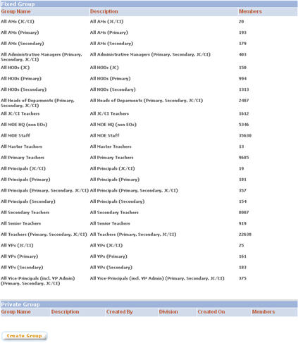
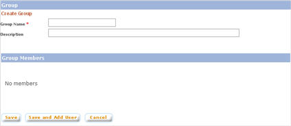
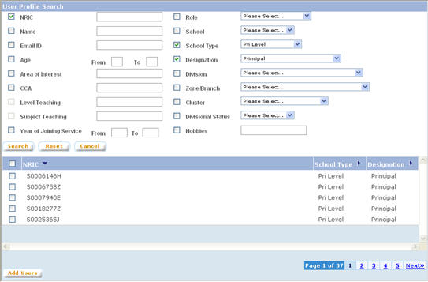
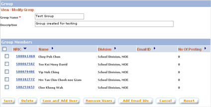

|
User Groups
Administrators
can create user groups to help in sending invitation mails for private
consultation papers and surveys and inviting users to private
discussion threads.
a.
Click on “User Groups” button from the left panel
of the admin main page
b. The “Group List”
page lists all the groups and the details. There are 2 types of
groups: Fixed Group and Private Group. Fixed Groups cannot be modified.
Each of the Fixed Groups have a certain condition for which users
who satisfied the conditions for the group, will be automatically
counted as the member of the group. Private groups are created by
the administrators to group users for other purposes other than
what the fixed groups provide.

1.
Create Group
Click
on “Create Group” button
1.1.
Group Details
On
the “Create Group” page, enter the group details.
Click on “Save” button to create the group and
return to the “Group List” page. Click on
“Save & Add Users” to create the group and
open the “View / Modify Group” page to add users.
NOTE: System does not allow duplicate group name.

1.2.
Add Group Member
a.
Click on the “Add Users” button to open the
“User Profile Search” pop up window

b.
Search users based on various criteria. Select users to be added and
click on “Add Users” button to add the selected
users.
c.
After finish adding users, close the “User Profile
Search” pop up window.
d.
Click on “Save” button to save the group
2.
Modify Group
Click
on a group name
2.1.
Modify Group Details
On
the “View / Modify Group” page, make necessary
modifications. Click on “Save” button to save
modifications made. NOTE: Other than Main Administrator, system does
not allow a user to modify a group from other division.

2.2.
Group Members
2.2.1.
Add Group Member
a.
On the “View / Modify Group” page, click on the
“Add Users” button to open the “User
Profile Search” pop up window
b.
Search users based on various criteria. Select users to be added and
click on “Add Users” button to add the selected
users.
c.
After finish adding users, close the “User Profile
Search” pop up window.
2.2.2.
Remove Group Member
On
the “View / Modify Group” page, select the users to
be removed. Click on “Remove Users” button to
remove the selected users
3.
Delete Group
On
the “View / Modify Group” page, click on
“Delete” button to delete the group.
|